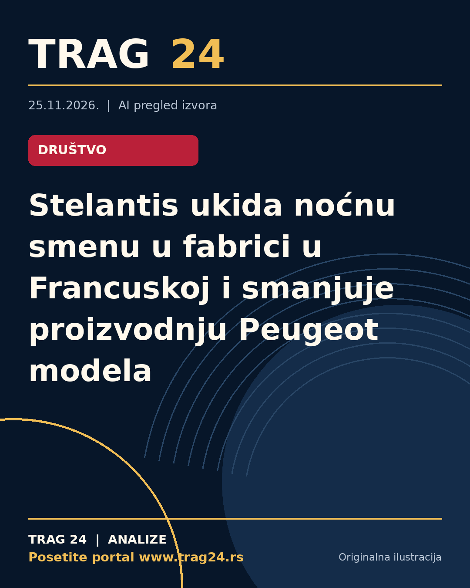

Stelantis ukida noćnu smenu u fabrici u Francuskoj i smanjuje proizvodnju Peugeot modela

ŠTA SE DOGODILO
Kompanija Stelantis odlučila je da od januara ukine noćnu smenu u svojoj fabrici u Sošou, Francuska, koja je specijalizovana za proizvodnju SUV modela srednje klase, prvenstveno Peugeot 3008 i Peugeot 5008, uključujući električne i hibridne verzije.
HRONOLOGIJA
Noćna smena u fabrici u Sošou uvedena je u novembru 2024. godine kako bi se podržala proizvodnja novih modela Pežoa 3008 i 5008, čija maloprodajna cena prelazi 40.000 evra. Od januara naredne godine smena će biti ukinuta, a fabrika će raditi samo u dve dnevne smene sa smanjenom proizvodnjom.
ŠTA NAVODE IZVORI
Iz kompanije Stelantis saopšteno je da se organizacija prilagođava usled trenutnih ekonomskih prilika i tržišnih prognoza. Proizvodnja će se smanjiti sa 1.050 na 850 vozila dnevno. Svi zaposleni u noćnoj smeni biće u prilici da razgovaraju sa svojim rukovodiocima do kraja novembra. Radnici angažovani na određeno vreme završiće svoje ugovorne obaveze. Insajder navodi da će ukidanje noćne smene ostaviti bez posla oko 500 radnika.
ŠTA JE POTVRĐENO
Potvrđeno je da se noćna smena ukida i proizvodiće se manje vozila u dnevnim smenama. Produžiće se i božićna pauza na dve i po nedelje. Radnici će imati priliku za razgovore sa rukovodiocima, a ugovoreni radnici završiće svoje radne obaveze u skladu sa ugovorima.
ŠTA NIJE POTVRĐENO
Nije precizirano koje konkretne kriterijume kompanija koristi pri odabiru radnika koji će ostati ili izgubiti posao i na koji način će biti sprovedena reorganizacija proizvodnih smena osim ukidanja noćne smene. Takođe, nema potvrde o detaljima finansijskih posledica za radnike i konkretnih planova podrške zaposlenima.
ŠTA OSTАJE OTVORENO: Ostaje nejasno koliko će dugoročno ukidanje noćne smene i smanjenje proizvodnje uticati na ukupnu strategiju proizvodnje i zapošljavanja Stelantisa u fabrici u Sošou. Nije poznato ni da li će biti novih mera za prevazilaženje sadašnjih ekonomskih izazova i kako će se razvoj tržišta odraziti na planove fabrike.
Izvori
- https://www.danas.rs/vesti/ekonomija/stelantis-ukida-nocnu-smenu-u-fabrici-u-francuskoj-smanjuje-proizvodnju/
- https://n1info.rs/svet/stelantis-ukida-nocnu-smenu-u-fabrici-u-francuskoj-smanjuje-proizvodnju/
- https://insajder.net/prenosimo/stelantis-ukida-nocnu-smenu-u-fabrici-u-francuskoj-smanjuje-proizvodnju
Ova analiza je pripremljena uz pomoć veštačke inteligencije na osnovu javno dostupnih izvora. Navodi izvora nisu nužno nezavisno potvrđeni.